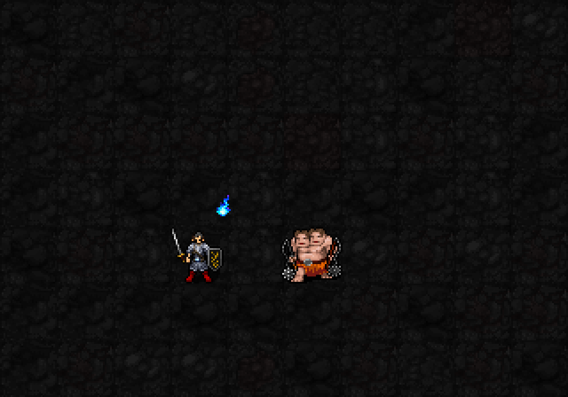
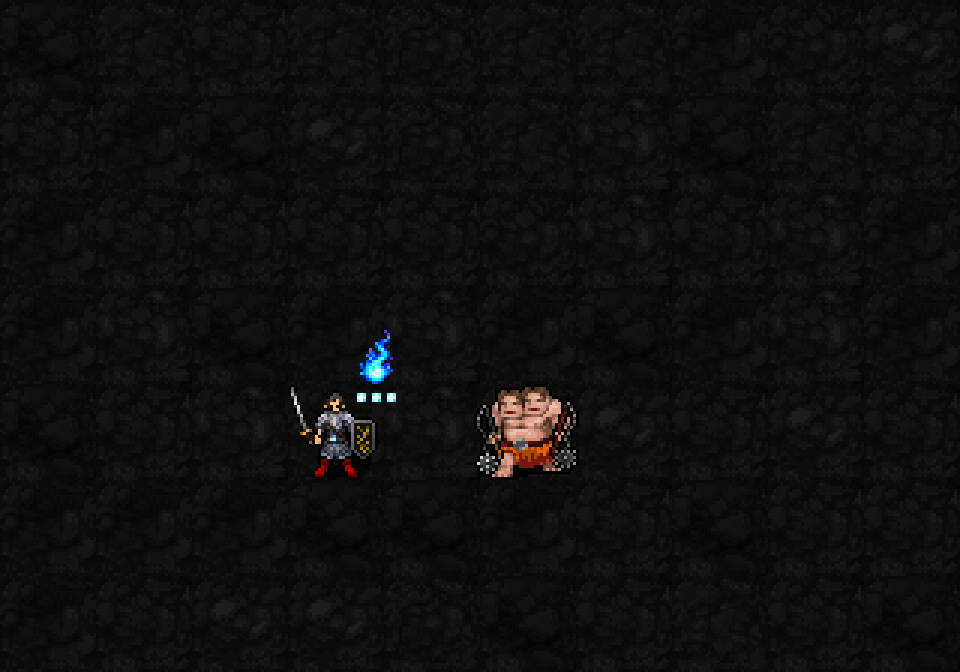

신앙30 해금 / 최소 기도술 제한 없음 / 상시 패시브·무료 설정

머리 오른쪽 위의 푸른 도깨비불은 가호 표시. 열기가 늘면 조금 커지고, 아래 한 줄의 작은 불씨 최대3개로 현재 열기를 표시합니다. 0에서도 기본 가호 불꽃은 남습니다.

반격은 적 몸통 중심에서 청백색 섬광과 짧은 푸른 불꽃이 사방으로 터집니다. 위로 피어오르는 가호 도깨비불과 다른 모양이며 지속 장판이 아닙니다. 열기 한 개를 쓴 뒤 본인 옆 작은 불씨도3개에서2개로 줄어드는 모습입니다.
| 항목 | 제안 |
|---|---|
| 열기 상한 | 6→3개. 새1개=기존2개 분량 |
| 획득 | 일반 유효피격2회당1개, 적 화염 유효피격/틱1회당1개. 적원천1턴구간 최대1개분량. 일반피격 충전 절반은 내부에서 추적하고 추가 불씨는 표시하지 않음 |
| 1성 반격 | 불씨1개소비,2d(3+⌊I/6⌋)추가화염. I12:2d5,평균6. AC무시·rF적용. 같은 시전/행동당1명·1회 |
| 저장 화력 | I12 만충전:기존6개×평균3=18 / 새3개×평균6=18. 공격당피해와발동빈도는 달라지므로 실전동일성 보장은 아님 |
| 3성 역분사 | 2d(6+⌊I/3⌋)+8H. I12 H0/1/2/3:평균11/19/27/35. 기존H6 최대35유지 |
| 5성 강화 역분사 | 3d(6+⌊I/3⌋)+8H. I12 H0/1/2/3:평균16.5/24.5/32.5/40.5. 기존H6 최대40.5유지 |
| 5성 충전 | 시전시3개충전,이후4턴마다1개. 기존2턴마다1/6충전을4턴마다1/3충전으로 환산 |
| 화염구름 흡수 | 유효구름 제거 보상2→1개. 원천별 획득상한 유지 |
| 감쇠 | 획득후3턴유지,이후4턴마다1개. 내부 절반충전도 유효접촉/획득 없이3턴 지나거나 층이동/배교 시 제거 |
| 유지 | rF/MP·신앙비용/행동시간/범위/권능지속/쿨다운 유지 |
실제 SDL 렌더러에 열기 표시와 반격 외형 단계를 준비해 촬영한 초안입니다. 이번 GIF에서 실제 공격·열기 획득/소비·추가 피해는 실행하지 않았고, 실제 열기·대상HP·월드·RNG는 변하지 않았습니다. 이번3불씨 수치는제안상태로실제전투는아직기존6열기규칙이며 새 이펙트는 아직 전투 콜백에 연결하지 않았습니다. 일반실행본su-five01유지. 도깨비불 원화는built-in imagegen으로 생성,가호8×12~11×18px/한줄최대3개불씨3px/반격최대28px폭로 적용. 본인 가호와 대상 반격 위치 검증·22신/저장복원 통과.